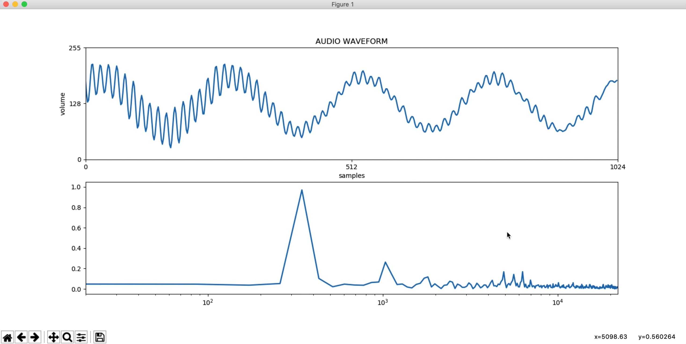
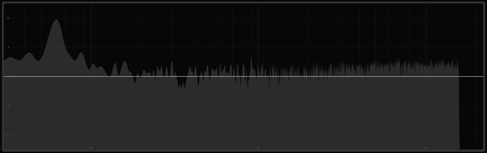
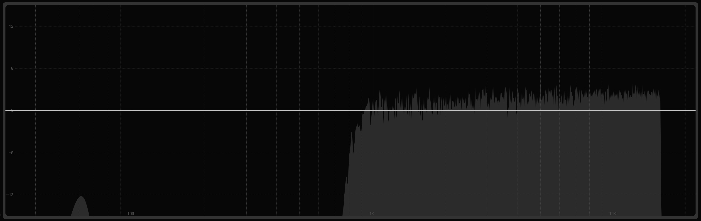
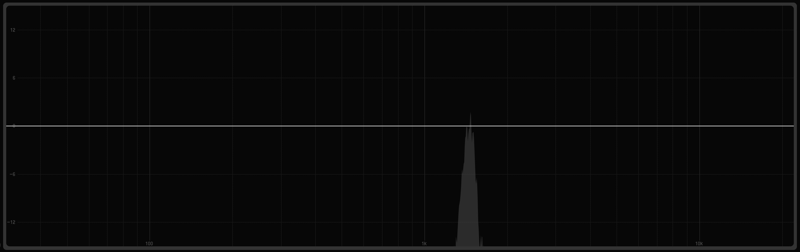
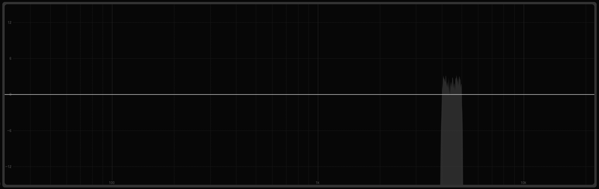
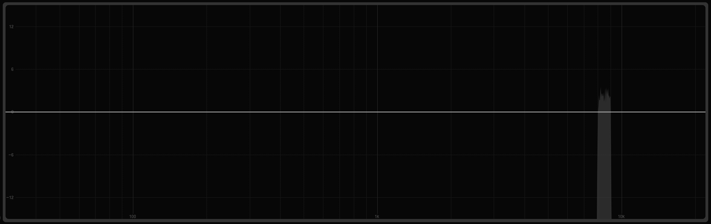
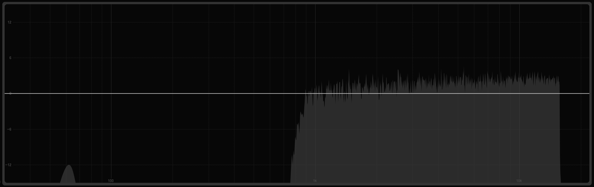
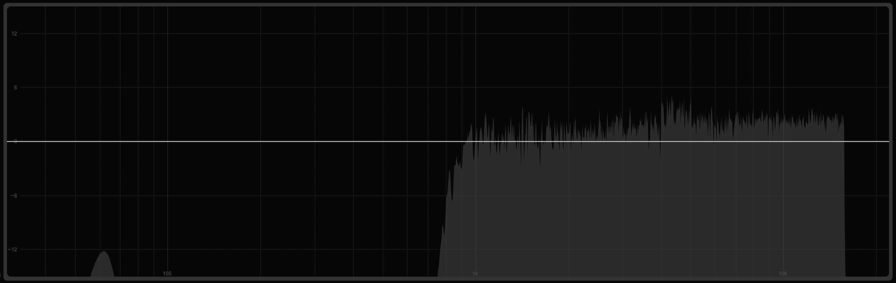

This is the FFT/Waveform Viewer displaying a basic 0,3kHz tone.

This is the first file, NOISE.wav. It comes with the package and is the base of the noise that you're creating.

This is the second file, NOISE_INITIAL.wav. This is NOISE.wav but with the initial hi-pass filter applied to it based on the input of the user. This example has the cutoff at 0,9kHz.

This is the third file, NOISE_ADDITIONAL.wav. This is the first bandpass that is added to the NOISE_INITIAL.wav file, based on the input of the user. This example has the lower cutoff at 1,3kHz and the upper cutoff at 1,4kHz.

This is the fourth file, NOISE_ADDITIONAL2.wav. This is the second bandpass that is added to the NOISE_INITIAL.wav file, based on the input of the user. This example has the lower cutoff at 4kHz and the upper cutoff at 5kHz.

This is the fifth file, NOISE_ADDITIONAL3.wav. This is the third bandpass that is added to the NOISE_INITIAL.wav file, based on the input of the user. This example has the lower cutoff at 8kHz and the upper cutoff at 9kHz.

This is the sixth file, combo1and2.wav. This file is the combination of NOISE_INITIAL.wav and NOISE_ADDITIONAL.wav.

This is the seventh file, combo1and2and3.wav. This file is the combination of combo1and2.wav and NOISE_ADDITIONAL2.wav.

This is the eighth and final file, NEW NOISE.wav. This file is the combination of combo1and2and3.wav and NOISE_ADDITIONAL3.wav.